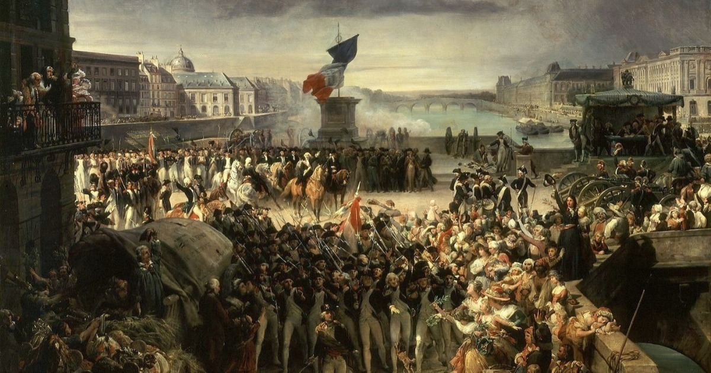

Historia Online
- menu
- inicio
A Revolução Francesa foi um evento histórico que ocorreu na França entre 1789 e 1799. Foi motivada por tensões econômicas, sociais e políticas, resultando na queda da monarquia, na ascensão da República Francesa e na eventual ascensão de Napoleão Bonaparte. Marcada por eventos como a Tomada da Bastilha e a Declaração dos Direitos do Homem e do Cidadão, a revolução também testemunhou períodos de violência, especialmente durante o Terror. Seu legado inclui a promoção de ideais democráticos e os debates sobre direitos humanos e justiça social.
